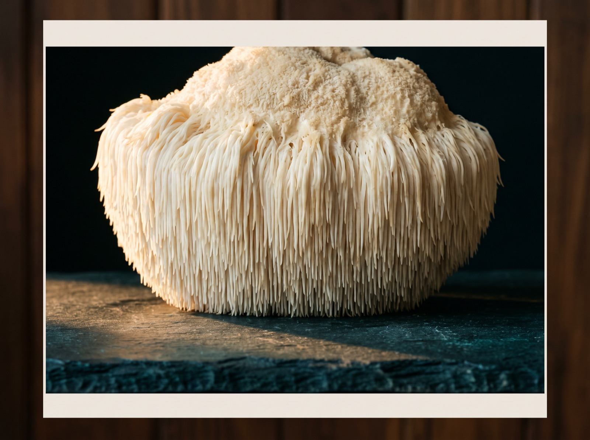
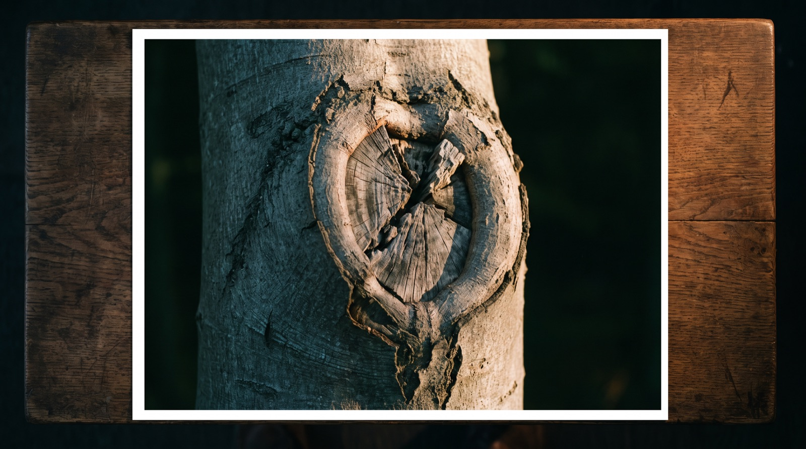
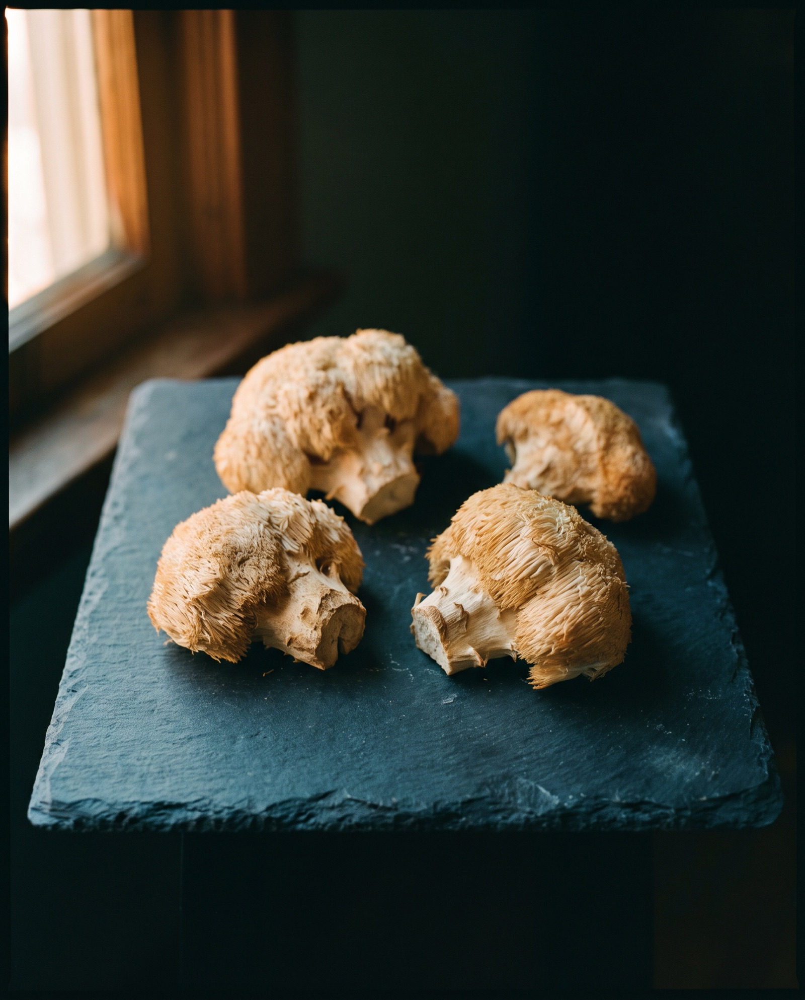
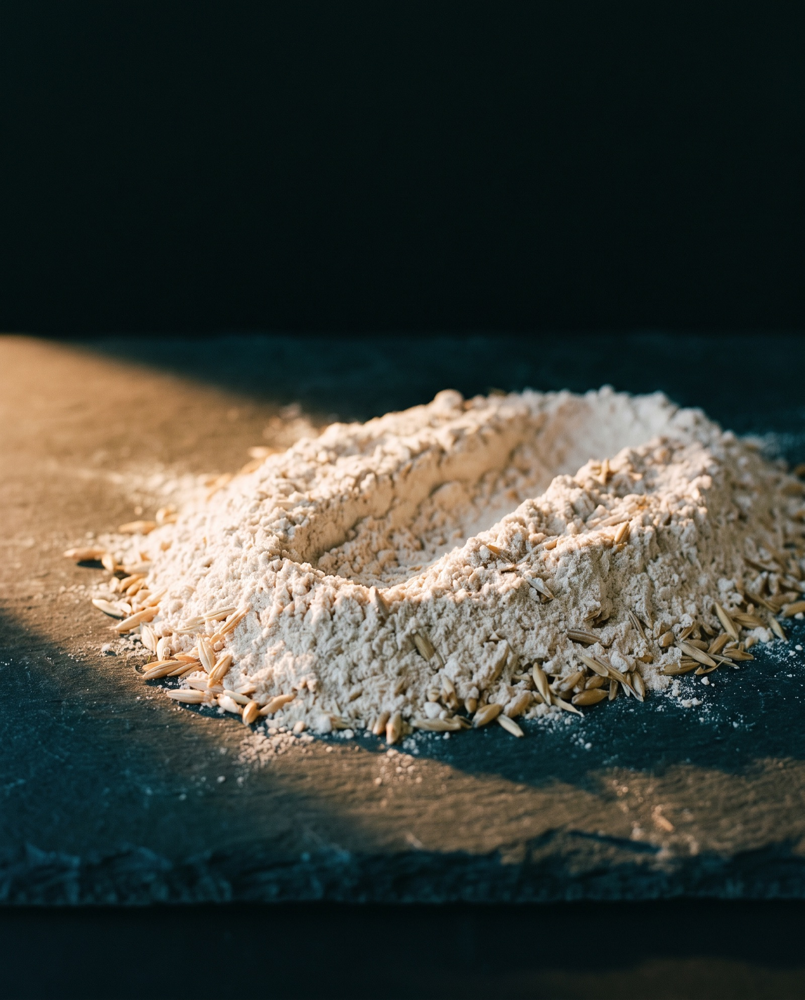
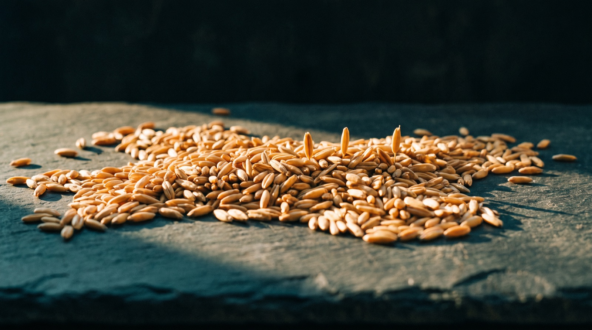
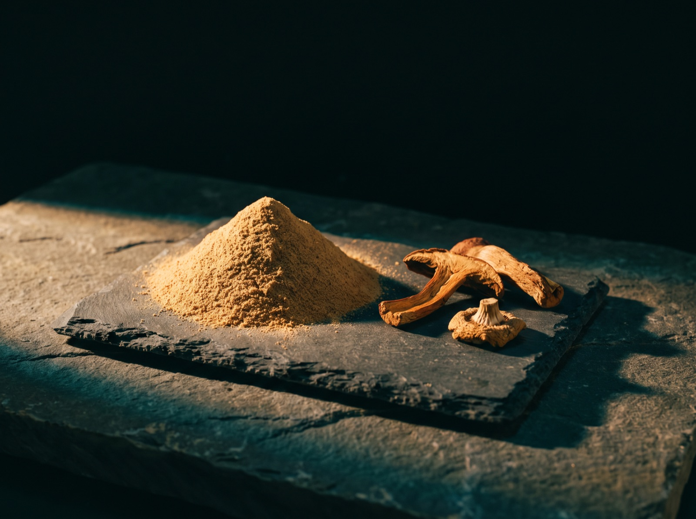

Lion’s mane · Ingredient notes
Lion’s mane. Fruiting body, grain, and the number nobody prints.
Most of the mushroom capsules sold in this country are mycelium grown on cereal grain, and the grain is milled in with them. It is printed on the back of the pot, in words chosen not to mean very much. This is how to read those words, and what an honest label says instead.
By Reiss Davies Ausar8 September 202611 minute read

A man came into the shop on Thursday with a pot of lion’s mane capsules in his coat pocket and set it down on the counter next to ours. His had cost fifteen pounds. Ours is twenty five. He asked, reasonably enough and without any edge in it, what the extra ten pounds was supposed to be buying him.
I turned his pot round and read the back of it out loud to him. The ingredient line said Hericium erinaceus mycelium on organic oats. That is the whole answer, it took four seconds to find, it cost nobody anything, and he had been buying that same pot every month for a year without once turning it over in his hand.
Nobody lied to him. It is printed. It is printed in words that most people skip over, in a size chosen so they will, and the gap between what those five words describe and the shaggy white mushroom photographed on the front of that pot is the entire price difference. Knowledge of cellf begins with turning the pot round.
01What lion’s mane actually is
Hericium erinaceus, the Mountain Priest, is a fungus that fruits on hardwood. No cap, no gills, no stem worth the name. What it puts out instead is a white cushion, anywhere from a fist to a football, hung all over with soft downward spines an inch or two long. From ten metres away on a trunk it reads as a shaving brush somebody has left up a tree. Up close it is a bank of icicles. The spines carry the spores, which is the job gills do on an ordinary mushroom, so the form is different and the function is the same.
It grows on dead and dying broadleaves, beech mostly, sometimes oak, usually out of a wound well above head height. In Britain it belongs to the old beech woods of the south and it is genuinely uncommon: it is one of a small number of fungi listed on Schedule 8 of the Wildlife and Countryside Act 1981, which makes picking it an offence here. Elsewhere it is common enough to have proper names, yamabushitake in Japan and houtou, monkey’s head, in China.

It is a good edible mushroom and people cook it, which is worth saying out loud, because a great deal of what goes into capsules in this trade never had a culinary life at all and never could have had one. Fresh, it is dense, wet and very white, and it tears into strips rather than taking a knife. Fried hard in a dry pan and then in butter it goes gold and stringy, somewhere near crab, or a thick scallop.
Dried, it loses the colour and most of the bulk. A properly dried piece is cream to tan, hard, fibrous, surprisingly light in the hand, with the stubs of the spines visible on a cut edge. That is the material a fruiting body powder is milled from.

02Fruiting body, or mycelium grown on grain
A fungus is mostly not the mushroom, and this is where the money hides. The organism is the mycelium, a network of fine white threads running through wood or soil, quietly taking it apart. The fruiting body is what that network pushes up into the air when the conditions turn, in order to let its spores go. Both of them are the fungus and neither of them is the same material as the other. Form denotes function, its that simple, and you are buying one form or the other.
Growing fruiting bodies takes time, and a room, and somebody paying attention to that room. Hardwood sawdust with a little bran goes into filter-patch bags, sterilised and inoculated, then sits in the dark for weeks while the mycelium runs through and colonises the block. The blocks go into a fruiting room: temperature down, humidity up, fresh air moving through, holes cut into the bags. Mushrooms come out of those holes over the following weeks and get picked by hand, dried and milled. That is months of work for a dry yield that would fit in a shoebox.
Growing mycelium on grain takes neither the time nor the room. Sterilised oats or brown rice go into a bag or a shallow tray, get inoculated, and sit in a warm dark room for three to six weeks while the threads work their way through the grain. No fruiting room, no temperature drop, no picking, nobody standing in a doorway at six in the morning. Nothing ever fruits, because nothing is ever asked to. What comes out at the end is a pale cake of grain bound together by mycelium, and that cake is dried, milled and filled into capsules.
Here is the part that matters, and it is a physical fact about an object rather than an opinion about anybody’s ethics. The grain cannot be taken back out. The threads have grown round every kernel and into it, and there is no sieve, no wash and no separation step that would part one from the other at any price. Substrate and organism come off that shelf as one single object, so milling the lot is not a shortcut somebody took, it is the only thing left to do with it. Whatever fraction of that cake was oats going in is still oats sat in the capsule.
The grain cannot be taken back out. It is milled in with the mycelium and sold by the same gram.
I will not put a percentage on anybody’s particular pot, because I have not analysed anybody else’s pot and I am not going to guess at a number and let it travel. What I can give you is the direction of the thing. The block starts out as grain, gains a modest weight of fungal thread, and is sold whole, by the gram, at mushroom prices.


The words that tell you which one you have
- Full spectrum. Sounds like more of the mushroom. Means the substrate is included in what you buy.
- Mycelial biomass. Mycelium plus whatever it grew on, weighed together and named as one ingredient.
- Myceliated oats, myceliated brown rice. The most honest of the family, because the grain is named.
- Whole food mushroom. A marketing phrase with no legal definition and no part of the fungus attached.
- Mushroom powder, with no part named. If the part is not stated, the part is not the selling point.
What an honest label says instead
- Fruiting body. Two words on the ingredient line, next to the Latin name. Everything else is downstream of this one.
- The extraction method. Hot water, dual extracted, or none at all if it is a milled powder. Say which.
- The extract ratio, with the starting material named, because a ratio without one is a number floating free.
- A beta glucan percentage, from an assay, ideally with the alpha glucan figure printed beside it.
03Beta glucans and starch, which is the number nobody prints
Both a mushroom and a cereal grain are built largely out of sugar. That is composition and not a figure of speech, and telling the two of them apart on a piece of paper comes down to which sugars, joined which way round.
Beta glucans are the structural sugars of the fungal cell wall: long chains of glucose in one particular configuration, cross-linked with chitin, which is the same stuff an insect shell is built out of. They are what makes the flesh of a mushroom hold the shape of a mushroom. In an analysis, they are the fungal fraction and nothing else is.
Starch is the storage sugar of a cereal grain. Also long chains of glucose, joined a different way, alpha linkages rather than beta. It is what the oat put by for its own seedling, and it was never meant for you.
Both of them are polysaccharides, and there is the trick, sat in plain sight on the back of the pot. A label declaring polysaccharides 40% has told you almost nothing at all, because the oat starch counts towards that figure exactly as the beta glucans do, gram for gram. On a grain-grown product the number can be mostly oat and still be entirely true as printed. Nobody has lied. Somebody has chosen which question to answer.

A beta glucan figure is a different animal, because the test has to separate the two out: the standard method measures total glucan, measures alpha glucan on its own, and subtracts one from the other. So a certificate of analysis worth reading carries both figures sat side by side. A high alpha glucan number on a mushroom product is telling you there is grain in it, in the plainest language chemistry has.
That is composition and analysis, and it is exactly as far as I am taking it. What beta glucans do is not mine to say, and the section after next sets out why not.
04Extraction, and what a ratio actually means
Three things can be in a mushroom capsule, made three ways, at three costs.
Raw milled powder. The dried material ground to a flour and filled straight into capsules. Nothing removed, nothing concentrated, cell walls intact. A powder’s beta glucan figure is the figure for the whole material rather than a concentrate, so it always reads lower than an extract’s. It is the cheapest thing to make: dry, mill, fill, and nothing wasted.
Hot water extraction. The dried material is simmered in water, sometimes for hours, sometimes under pressure. Water pulls out what is water soluble, and the beta glucans are in that fraction. The liquid is filtered off, the spent solids discarded, and the water driven away by spray drying, leaving a tan powder. Because the insoluble fibre is thrown away, a kilo of dried mushroom yields a good deal less than a kilo of extract.
Dual extraction. Hot water first, then the spent solids soaked in ethanol, or the two runs done separately on the same batch. Ethanol carries what water will not: the fat-soluble fraction, terpenes and sterols. The liquids are combined and dried together, so the finished powder holds both. It takes longer and costs more, which is why it is rarer than the labels suggest.

Then the ratios, which are the most misread numbers in this whole trade. 8:1 means eight kilogrammes of starting material went in and one kilogramme of finished extract came back out. That is the whole of it. A yield, by weight, saying nothing on its own about how much of anything at all is sat in the result.
A ratio is only worth reading with two things attached to it. First, what the starting material was, because an 8:1 from dried fruiting body and an 8:1 from a milled grain block carry the identical number on the front and are not the same product at all: the second one concentrated the oats as well, eight kilos down to one. Second, what the extract assays at, which walks you straight back to the beta glucan percentage.
One more thing, and it is arithmetic rather than chemistry. Fresh mushrooms are roughly nine tenths water, so a ratio quoted against fresh weight rather than dried weight did most of its work in the drying shed before anybody extracted anything. If a label says 10:1 and will not say from what, or in what state, assume the flattering reading was the one intended.
05What I am allowed to say about it, which is nothing
There is no authorised health claim for lion’s mane in Great Britain. Not a weak one, not a hedged one, not one with an asterisk hanging off the end of it. The list is empty, and the reason it is empty is more interesting than the fact that it is.
We sell food supplements in England, and the register of permitted health claims is a retained European one. The claims sat on it attach to named nutrients rather than to plants or to fungi, and they are only available where a product holds enough of that nutrient to qualify. Every botanical claim was parked pending assessment years ago and not one of them has come through since. Separately, the Human Medicines Regulations treat anything presented as treating or preventing a disease as a medicine, and presentation on its own is enough to do it.
Which is awkward, because every advert for lion’s mane in this country makes a claim out of the same family, and you will have read a dozen of them this year without going looking. I am not going to repeat one in order to disown it, because repeating a claim is still publishing the claim, however disapprovingly it is done. I will name the category and stop there: they are claims about cognition. None of them are permitted, and some of them, aimed at a named condition, would make the pot an unlicensed medicine.
Our own live listing carried several of that family, in bold, for years. It was wrong, it is being rewritten, and the product page this article links to is the rewritten one. I would far rather tell you that myself, here, than have you turn it up in a cache and wonder what else we have not mentioned.
So what is left standing is specification. Which part of the fungus, how it was grown, how it was extracted, what the assay says when somebody runs one. Every bit of that is checkable, and a customer who can check a thing for themselves never has to take my word for anything, which is the arrangement I want. What the capsules do for you is your account to give, and it was never mine.
06How it is taken
Two capsules in the morning with at least 500 ml of water. That is the dose exactly as our listing prints it and I am not going to improve on it on a journal page. The pot is £24.99.
The listing does not print the capsule count, which is an omission, and it is ours to fix rather than yours to work around. Until it does, I am not going to tell you how many days a pot lasts, because I would be guessing and you would be believing me.
In a capsule it has no taste worth reporting. If you want the taste, buy it dried and cook it in butter.
Three other mushroom pots sit on the shelf, briefly.
- Reishi, Ganoderma lucidum, £24.99. The listing prints 50 vegan capsules at 800 mg.
- Chaga, Inonotus obliquus, £24.99. The listing prints 750 mg per capsule, the only one of the four that differs.
- Mycrodose, £39.99, 50 vegan capsules at 800 mg. The four-mushroom formula: lion’s mane, cordyceps, chaga and reishi.
Everything above about which part of the fungus you are buying, and about polysaccharide figures stood next to beta glucan figures, applies to those three exactly as it applies to the first. Ask our pots the same questions I have just taught you to ask the fifteen pound one. If we cannot answer them, that is our problem and not your loyalty.
07Who should not take it
I would rather lose the sale than put the wrong pot in your hand, so here is the list of questions we ask across the counter.
- Pregnant or breastfeeding. There is not enough good information on this fungus in pregnancy to say anything useful, so I would ask your midwife or GP first.
- Anyone on prescribed medication. Speak to your GP or pharmacist before you start, and take the pot with you so they can read the ingredient line themselves.
- Anyone with a mushroom allergy. This is a fungus and nothing else. If mushrooms in food give you trouble, this is not for you. Reactions to fungal material are real and not rare.
- Anyone due an operation. Stop two weeks before, and tell the anaesthetist everything you take, supplements included. The pre-op form asks, and almost everybody leaves supplements off it.
- Children. Not for them. Keep it out of reach.
- Anyone thinking of picking their own. Do not, in Britain. It is on Schedule 8 and it is an offence.
None of that is medical advice and I am not qualified to give any. It is the same set of questions you would get asked stood up at the counter on Smithdown Road.
Food supplements should not be used as a substitute for a varied and balanced diet and a healthy lifestyle. Do not exceed the stated dose. Speak to your GP or pharmacist before starting any supplement, particularly if you are pregnant, breastfeeding or taking medication. Keep out of reach of young children.
08The pot
Lion’s Mane, £24.99, 100% Hericium erinaceus in vegan capsules, two in the morning with at least 500 ml of water. And if you would rather bring in the pot you already own and have the back of it read out to you, that costs nothing and it never has, Tuesday to Sunday.

Reiss Davies Ausar
Founder and formulator at Herbase. Trading online since 2019 and behind the counter at 599 Smithdown Road, Liverpool, since August 2024. Author of three books on herbal practice. Book an hour with him if you want to go into more detail.